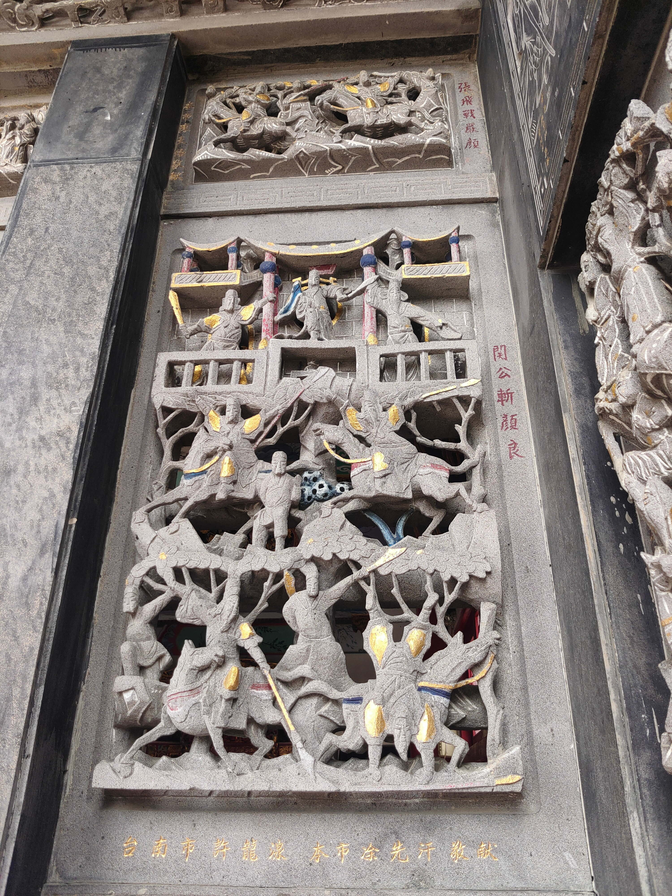

關公斬顏良
會說話的石頭

圖 關公斬顏良
河北軍閥袁紹的手下猛將，有威名。顏良與文醜一起作為袁紹軍隊的勇將而聞名，孔融曾以顏良、文醜作為袁紹軍隊的武將代表勸諫曹操小心他們。 200年，袁紹、曹操於官渡交戰。開戰時，謀士沮授勸諫袁紹「顏良性急不可單獨任用」，但是袁紹仍以顏良進攻單獨守護白馬的曹將劉延。（《後漢書·袁紹傳》，《三國志·武帝紀》中顏良是與郭圖、淳于瓊一起進攻。） 面對這個形勢，曹操採納了謀士荀攸的建議，扮作偷襲袁紹軍隊的後方，率軍先佯裝在延津渡河，誘使袁紹分兵延津，然後，輕兵急進，奔襲白馬，攻其不備。袁軍因為打算防禦進攻的曹軍，顏良的部隊因而孤立地作戰。此時曹軍趁機引兵向白馬疾進，及距白馬十餘里時，顏良大為震驚，倉促迎戰。曹操派將軍張遼為先鋒率先進擊。這時，張遼推薦當時被曹操俘虜的關羽同為先鋒，關羽作為援軍被派遣而跟顏良碰上。據《三國志·關張馬黃趙傳》所載，關羽望見顏良的帥旗後，即單人匹馬殺入敵陣，將其刺死並割下頭顱返回，顏良手下將士因懼怕無人敢擋。曹操亦乘勢揮令大軍衝殺，袁軍因主帥之死而大敗潰散，白馬之圍遂解。 之前曹操覺得關羽無心久留，讓張遼試探。關羽說自己受厚恩於劉備，不會背棄，也知道曹操厚待自己，決定立功報答曹操再離開。當時劉備依附袁紹。關羽斬殺顏良後，曹操上表為他表功，封漢壽亭侯；因知道他一定會離開，重加賞賜，但關羽將曹操的賞賜全部留下，投奔袁紹軍與劉備會合。
資料來源： https://reurl.cc/ek6DZx